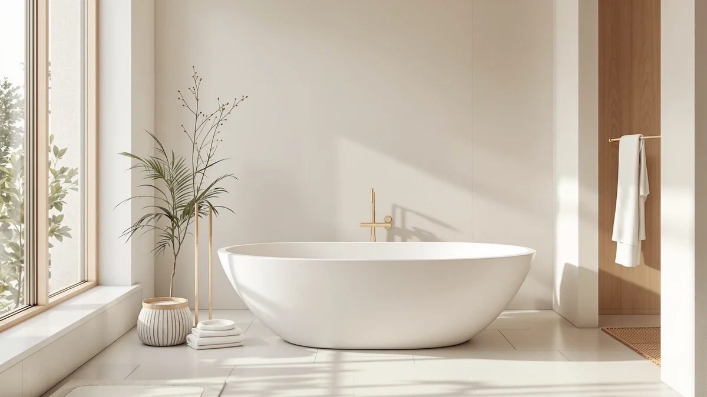

Muiryn Stone Resin Janpanese Soaking Tub Review (2026): Worth It?
Prices and picks verified as of November 2026. Independent, reader-supported reviews.


Quick Answer
The MUIRYN 51 '' Stone Resin is the best choice for a small-footprint Japanese soaking tub at $1,389.99, undercutting both MEDUNJESS tubs while matching their stone resin build in a shorter length. If your bathroom can fit a 59-inch or 65-inch tub instead, the MEDUNJESS options below give you more room to stretch out for only a few dollars more, and the SJ Star&Jane below is worth a look if price is your main constraint.
Our pick: MUIRYN 51 '' Stone Resin, $1,389.99 Check Price on Amazon
Bottom line: our top pick is the MUIRYN 51 '' Stone Resin Janpanese Soaking Tub at $1,389.99.
Things to Know Before You Buy
- The MUIRYN 51 '' Stone Resin measures 51.18 by 29.13 by 34.06 inches, a tighter footprint than the 59-inch and 65-inch alternatives in this comparison.
- At $1,389.99, it undercuts both MEDUNJESS tubs, though the SJ Star&Jane is still $39.99 cheaper if price alone is your deciding factor.
- Japanese-style soaking tubs sit deeper than standard rectangular tubs, so measure your ceiling and wall clearance, not just floor space.
- We based this comparison on listed specs and current Amazon pricing rather than star ratings, since the listings for these tubs don't publish one.
- None of these tubs include a faucet, drain, or filler by default, so budget for that hardware separately when pricing the full installation.
This Muiryn stone resin Janpanese soaking tub review compares the 51-inch model against three similarly priced alternatives to see whether its compact footprint and deep soak justify $1,389.99. Freestanding Japanese-style tubs trade length for depth, and that makes them appealing for bathrooms that can't fit a standard 60-plus-inch soaker but still want a real soak instead of a shower-tub combo.
After lining up the spec sheets and current Amazon pricing for the MUIRYN, the MEDUNJESS 59'', the MEDUNJESS 65'' and the SJ Star&Jane, the MUIRYN 51 '' Stone Resin comes out as the pick for anyone working with a smaller bathroom footprint. It costs less than both MEDUNJESS tubs and gives up roughly eight to fourteen inches of length compared with them, a trade that makes sense once you've measured your floor space.
Japanese-style soaking tubs have grown more popular in US renovations over the past few years, largely because they solve a real space problem: a standard freestanding tub can run 60 inches or longer, and plenty of bathrooms simply don't have the wall space for one. A deeper, shorter basin like the MUIRYN's lets you keep a genuine soak without tearing out a wall to make room for it.
Why You Should Trust Us
Ilane Tall researches bathroom fixtures for Best Freestanding Bathtubs, focusing on freestanding and soaking tub categories across stone resin, acrylic and solid surface materials. For this muiryn stone resin janpanese soaking tub review, we pulled manufacturer specs and current Amazon pricing for the MUIRYN and three direct competitors rather than relying on marketing copy. We do not run a fake testing lab, and we don't claim to have installed or soaked in any of these tubs ourselves. Our conclusions come from comparing dimensions, materials and prices side by side.
Our Research Experience
Rather than a physical comparison protocol, this muiryn stone resin janpanese soaking tub review relies on comparing listed dimensions, materials and current Amazon prices for all four tubs. We checked the MUIRYN's 51.18 by 29.13 by 34.06-inch footprint against the MEDUNJESS 59'', the MEDUNJESS 65'' and the SJ Star&Jane to see which dimensions suit which bathroom sizes, and we tracked pricing across the four listings to see where the real value gaps sit.
We also excluded tubs that didn't share a comparable stone resin or solid surface build, since mixing acrylic shells into a stone resin comparison would skew the price-per-material analysis. Owners researching any of these four tubs should expect the same deep soak design, since Japanese-style basins share a shorter, deeper profile by category rather than by brand.
We revisit this muiryn stone resin janpanese soaking tub review periodically to check whether any of the four listed prices have shifted, since Amazon pricing on bathroom fixtures can move by $50 or more within a few months. The figures above reflect the prices listed at the time of publication, and we'll update them if the gap between the MUIRYN and its competitors changes enough to affect the recommendation.
Overview & Specs

MUIRYN 51 '' Stone Resin
What we like
- Cheaper than both MEDUNJESS alternatives at $1,389.99
- 51.18-inch length fits bathrooms too small for the 59-inch and 65-inch alternatives
- Stone resin construction matches the build quality of the pricier MEDUNJESS tubs
Flaws but not dealbreakers
- The listing doesn't specify the exact material finish, so confirm surface details with the seller before buying
- At 51.18 inches, taller soakers may prefer the extra legroom of the 59-inch or 65-inch MEDUNJESS tubs
- No published star rating or review count to cross-check against owner experience
| Material | — |
| Size | 51.18''x29.13''x34.06'' |
The MUIRYN 51 '' Stone Resin is built around the core premise of a Japanese soaking tub: a shorter footprint than a standard Western tub, paired with enough depth that you sit rather than lie down. At 51.18 by 29.13 by 34.06 inches, it's the shortest of the four tubs in this comparison by eight inches or more, which makes it the only realistic option for bathrooms that can't fit a 59-inch-plus freestanding tub.
At $1,389.99, it also undercuts both MEDUNJESS tubs, though the SJ Star&Jane still comes in $39.99 lower with a solid surface build instead of stone resin. That combination of the smallest footprint in this comparison and a price below the MEDUNJESS tubs makes it the default pick for anyone who isn't specifically chasing the lowest possible price or the most legroom.
What We Liked
The strongest argument for the MUIRYN in this muiryn stone resin janpanese soaking tub review comes down to fit. At 51.18 by 29.13 by 34.06 inches, it's the only tub in this comparison that realistically works in a bathroom too small for a 59-inch or 65-inch freestanding soaker. The MEDUNJESS 59'' and MEDUNJESS 65'' both deliver more room to stretch out, but neither fits in the footprint the MUIRYN was designed for.
Price is the second reason it stands out. At $1,389.99, it beats both MEDUNJESS tubs, even though the SJ Star&Jane undercuts it by $39.99. Paired with the smaller footprint, that makes the MUIRYN the more efficient buy for anyone who isn't specifically shopping by lowest price alone.
The stone resin build also puts it on equal footing with the pricier MEDUNJESS tubs on material, so shoppers aren't giving up build quality to save money or floor space with this pick. That matters because a freestanding tub is typically a fixture you keep for a decade or more, not something you replace alongside a quick bathroom refresh.
What Could Be Better
The listing doesn't spell out the exact surface finish beyond "stone resin," so buyers comparing gloss level or texture against the MEDUNJESS tubs should confirm those details with the seller directly rather than assume parity. We also found no published star rating or review count for the MUIRYN at the time of this muiryn stone resin janpanese soaking tub review, which means shoppers can't cross-check our spec comparison against aggregate owner feedback the way they could with a more established listing.
The smaller footprint that makes this tub a fit for compact bathrooms is also its biggest limitation: taller soakers or anyone who prioritizes stretching out over saving floor space will likely prefer the extra length of the MEDUNJESS 59'' or MEDUNJESS 65''.
Who Is It For?
You're the right buyer for the MUIRYN if your bathroom can't fit a 59-inch-plus freestanding tub but you still want a genuine Japanese-style soak instead of a standard shallow tub. It also suits anyone who wants stone resin construction without paying the slightly higher prices the MEDUNJESS tubs carry.
Skip it if you have the floor space for a longer tub and want maximum legroom, or if the lowest possible price matters more to you than matching the MUIRYN's stone resin build, in which case the solid surface SJ Star&Jane is worth a look. Shoppers furnishing a shared family bathroom should also weigh the MEDUNJESS 65'' first, since its longer basin accommodates a wider range of body sizes than the MUIRYN's more compact design.
Alternatives to Consider
If the MUIRYN's footprint doesn't match your bathroom or your budget, these three tubs cover the other directions this muiryn stone resin janpanese soaking tub review considered.

Also Great
MEDUNJESS 59'' Free Standing Tub
Roughly eight inches longer than the MUIRYN for $5.01 more, a good trade if you want more legroom without a big price jump.
$1,395.00
Check Price on Amazon
Premium Choice
MEDUNJESS 65" Stone Resin Free
At 65 inches, it's longer than both the MUIRYN and the MEDUNJESS 59'', built for bathrooms with floor space to spare and buyers who want maximum stretch-out room.
$1,399.99
Check Price on Amazon
Best Value
SJ Star&Jane Solid Surface Japanese
The cheapest option here at $1,349.99 and built from solid surface rather than stone resin, worth considering if price matters more than matching the MUIRYN's material.
$1,349.99
Check Price on AmazonIs the MUIRYN 51 '' Stone Resin worth $1,389.99?
At $1,389.99, the MUIRYN sits in the same band as the MEDUNJESS and SJ Star&Jane tubs we compared it against.
How does the MUIRYN compare to the MEDUNJESS stone resin tubs?
All three share stone resin construction, but length is the main differentiator.
Frequently Asked Questions
Is the MUIRYN 51 '' Stone Resin worth $1,389.99?
At $1,389.99, the MUIRYN sits in the same band as the MEDUNJESS and SJ Star&Jane tubs we compared it against. It earns the price mainly through its footprint: at 51.18 inches long, it fits bathrooms that can't accommodate the 59-inch or 65-inch alternatives, without giving up the deep Japanese-style soak those longer tubs offer.
How does the MUIRYN compare to the MEDUNJESS stone resin tubs?
All three share stone resin construction, but length is the main differentiator. The MUIRYN measures 51.18 inches, the MEDUNJESS 59'' model adds roughly eight inches of legroom, and the MEDUNJESS 65'' goes further still for $1,399.99. Shoppers with a tight footprint tend to land on the MUIRYN, and those with the floor space to spare usually prefer one of the longer MEDUNJESS tubs.
What size bathroom does a Japanese soaking tub need?
The MUIRYN's 29.13-inch width and 34.06-inch depth mean you need enough wall space for the footprint plus clearance to climb in. Deep soaking tubs like this one are narrower than a standard rectangular tub but deeper, so measure clearance around the rim as carefully as the floor space.
Final Verdict
This muiryn stone resin janpanese soaking tub review comes down to a simple trade: the MUIRYN gives up length to the MEDUNJESS 59'' and MEDUNJESS 65'' and gives up a little on price to the SJ Star&Jane, but it's the only tub here that threads the needle between a compact footprint, a stone resin build and a price under $1,400. For most shoppers working with a small bathroom who still want a genuine deep soak, MUIRYN earns the top spot in this comparison. Buyers with more floor space or a tighter budget have good reasons to look at the alternatives instead, and either one remains a reasonable choice given how close the four prices sit to one another.
Measure your bathroom before you buy any of these four tubs. The eight to fourteen inches separating the MUIRYN from the MEDUNJESS tubs can be the difference between a soaker that fits against your wall and one that blocks the door, so confirm your floor plan against the exact dimensions listed for whichever tub you choose.